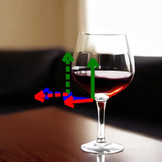
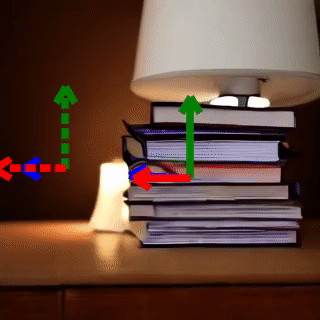
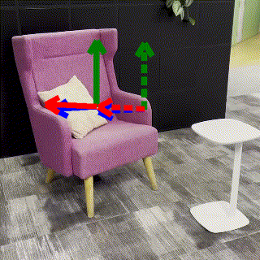
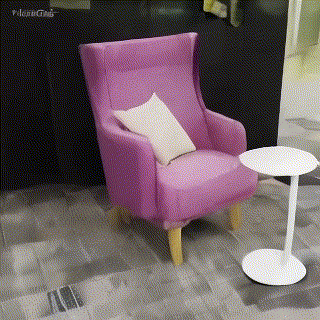
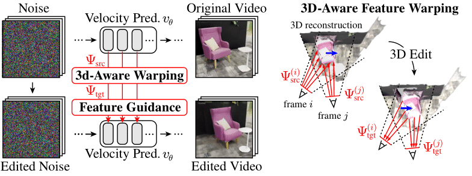
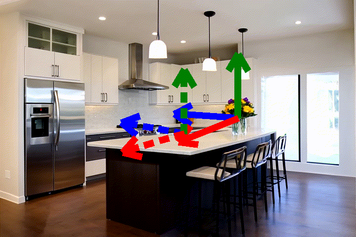
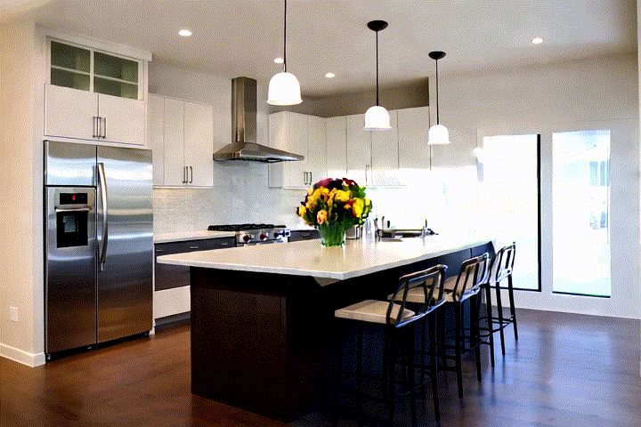
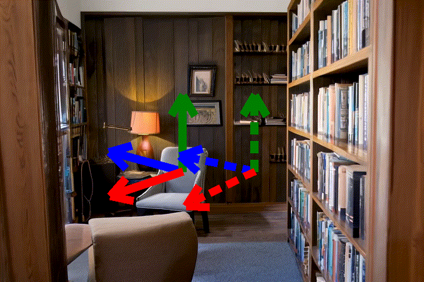
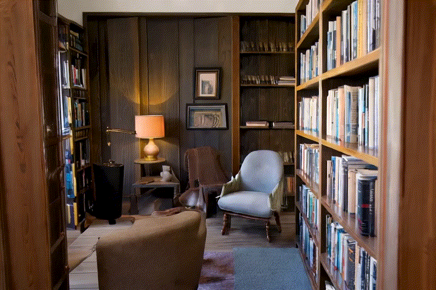
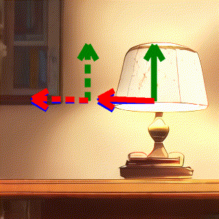
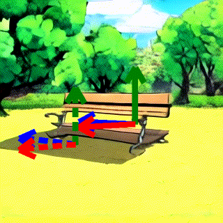
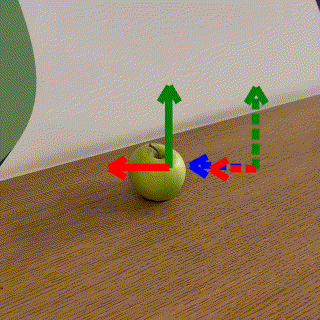
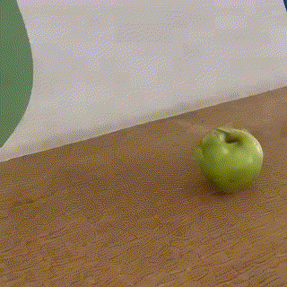
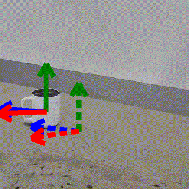
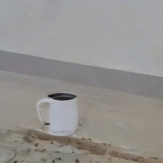
@inproceedings{Koo:2025VideoHandles,
title = {VideoHandles: Editing 3D Object Compositions in Videos Using Video Generative Priors},
author = {Koo, Juil and Guerrero, Paul and Huang, Chun-Hao Paul and Ceylan, Duygu and Sung, Minhyuk},
booktitle = {CVPR},
year = {2025}
}